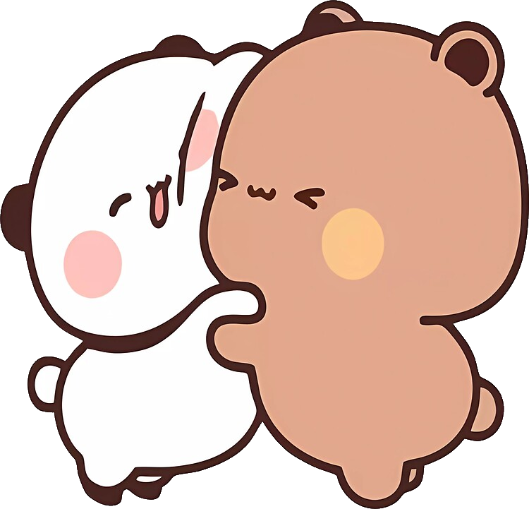
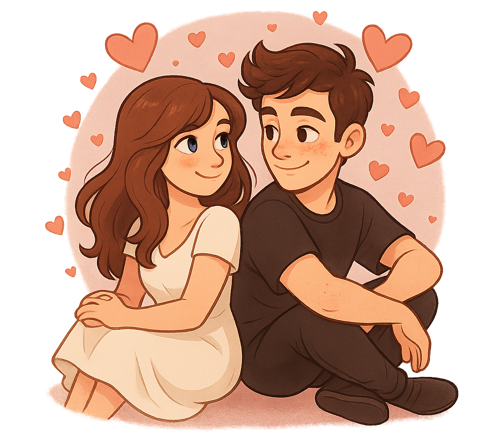

Jakie mam odczucia - co czuje oraz jak to sie rozwija, gdzie finalnie zaprowadzi nas los i dokąd tak naprawde obaj zmierzamy ?
Nasz wspólny wysiłek aby od samego początku nadać temu związku sporego kolorytu - sprawić aby było to coś wyjątkowego
Cały zbiór wszystkich najwazniejszych informacji w jednym miejscu, oraz końcowe przemyślenia dotyczące całego
Gdyby ktoś Mi powiedział że tak bedzie wyglądać moja przyszłość - nie uwierzyłbym mu, Nigdy nie zakładałem że bede miał kogoś tak Cudownego jak Ty, Nigdy nie sądziłem że ta dziewczyna przypadkowo poznana stanie sie dla mnie najważniejszą osobą w moim życiu, Naprawde jestem wdzieczny ze właśnie tak sie to potoczyło i leci ciągle na przód, Naprawde jestem wdzieczny że moge cie mieć u swego boku niezależnie od pory dnia humoru czy innych życiowych przeszkód
A jednak - po mimo tak absurdalnie nie wiarygodnych liczb udało sie, jesteśmy razem, po mimo tylu niewiadomych po mimo tylu warstw życiowych ciernistych blokad - udało sie nam, Kocham Cie Nikola

To zawsze znajdziemy jakiś kompromis, własnie gdy to pisze jesteś na mnie obrażona ponieważ nie napisałem do Ciebie, że jestem już w domu - nie rozumiem tego troche, ponieważ naprawde moje intencje nie były złe i nie chciałem abyś, źle sie z tego powodu czuła - chcąc nie chcąc naprawde gdy wrócilem to mnie odcieło i nie miałem na celu sprawić Ci przykrości
Mimo że grasz właśnie z Martyną - jesteś na mnie obrażona oraz doskwiera mi gorączka, wciąż pisze dla Ciebie strone oraz kocham Cie tak samo mocno, myśle że masz racje że źle zrobiłem ale wciąż z łzami w oczach chce dokonczyć tą strone aby nastepnego dnia dać Ci już ją w całośći
Fascynuje mnie to uczucie, że nieświadoma tego wszystkiego właśnie grasz sobie a ja szykuja dla Ciebie prezent rocznicowy który bedzie juz na zawsze widniał w cyfrowym świecie, Chce z tego miejsca powiedzieć tobie - Kocham Cie, kocham cie za to kim jesteś i to nie zależnie od wszystkiego wokół, moje życie bez Ciebie nie byłoby takie samo, potrzebuje twojej miłości, twojego słodkiego głosu oraz niesamowitej energi którą mnie darzysz, Dziekuje Nikola, Chocbym mial to wykrzyczeć tysiąc razy to chce Ci powiedzieć że dziekuje, że pojawiłaś sie w moim życiu
Planuje rozwijać tą Strone o nowe prześliczne sekcje, chciałbym aby w niedalekiej przyszłości ta strona rozwineła sie o dodatkowy content, Chciałbym aby za kilka lat była z tego niesamowita pamiątka, która bedziemy mogli wspominać i pokazywać naszym dziecią, Myśle że to dośc orginalny oraz uroczy pomysł aby naszą miłość zarchiwizować w takiej postaci
Nie Jestem w stanie nawet powiedzieć ile czasu zajmuje mi stworzenie tej strony, Prace nad nia zaczeły sie jakoś 8 września, Początkowo na naszą rocznice przygotowywałem dla Ciebie zestaw własnorecznych prezentów, zamówiłem Ci 2 personalizowane przedmioty oraz drobne upominki coś na wzór Świątecznego prezentu. Pomysł lekko ewoulować Ponieważ któregoś dnia Powiedziałaś Mi że bardzo byś chciała tą strone, także zacząłem robić pierwsze szkice
Motyw jej był przerabiany 2 Krotnie , Niestety z braku czasu nie mogłem pozwolić sobie na ulepszanie jej motywu wiec przystąpiłem do pracy od razu, zacząłem Tworzyć pierwsze sekcje oraz na bierząco zmieniać motyw całej strony - Pomysł ze szkicu orginalnego został w zasadzie cały nadpisany, moje życie wyglądało mniej wiecej tak że: Szedłem do szkoły, wracałem - 2 godziny spedziłem nad pisaniem Projektu Ineris w którym pomagam oraz reszte dnia spedzałem nad tą strone, Odbiło mi sie to bardzo na zdrowiu ale prężnie parłem do przodu a czasu było już coraz mniej
Odbiło sie to również na czasie który mogłem Ci poświecic, przepraszam - Przepraszam że tyle musiałaś czekać oraz odczuwać ból rozłąki, Chce bys wiedziała że poświeciłem Ogrom wysiłku aby dla Ciebie stworzyć coś co moge dać Ci całkowicie od serca. Nastepne tygodnie mijały zbyt szybko, przed komputerem siedziałem dziennie z 7 może 8 godzin, ale Finalnie udało mi sie zaimplementować wszystko to co chciałem by pierwotnie sie tu znalazło
To juz ponad Okrągły rok budowania wspólnego zaufania, wspomnień, standardów oraz przepieknych chwil nacechowanych naszą Miłością, Czas z tobą u swego boku zleciał mi nieziemsko szybko, naprawde czuje sie przy tobie tak bardzo dobrze. Chciałbym aby nasze wspólne plany nie poszły na marne i chiałbym je z toba rozwijać dalej i prężniej
Jedną z rzeczy na której mi zależy to aby mieć już wspólny dom, w którym moglibyśmy zacząć wypisywać nowy rozdział naszej histori, bo aby założyć rodzine najwazniejsze jest aby mieć swój własny cieply dom gdzie możemy przywitać nasze pierwsze dziecko, Dzczerze dużo nad tym myslalem i naprawde kocham ten obraz w głowie Ciebie wstającej rano i wtulającej sie we mnie , myśle że nie ma drugiej takiej rzeczy która by aż tak roztopiła moje serduszko jak własnie te chwile spędzone na wtulaniu sie w siebie
Tak naprawde w mojej głowie kreuje sie wiele scenariuszy które ciagle biore pod uwage - Chciałbym aby nasza przyszłość miała spójny początek i była wygodna dla nas obydwu, Chce juz Cie miec przy sobie, chwalić sie tobą każdemu kogo znam i czuć sie szczesliwy u twego boku.
Ostatnie Tygodnie były bardzo trudne dla nas obydwu, Nie miałem za dużo czasu który mógłbym tobie dać ale chce to stanowczo zmieni, W tej chwili gdy udało mi sie zdjąć przesyt obowiązków mam sporo wolnego czasu który chce tobie Poświecić, Brakuje mi wspolnych gier, wspolnego czasu spedzonego we dwoje dlatego obiecuje ze w najblizszym czasie gdy ty też załapiesz troche czasu - spedzimy go we dwoje, Ty i Ja.
Oprócz Tej Strony, czekają na Ciebie jeszcze 3 prezenty o których już wczesniej wspomniałem - Mianowicie Czeka na Ciebie Paczka z bardzo istotnymi dla mnie przedmiotami oraz Chciałbym zakupić kilka drobiazgów dla nas, Chciałbym aby nasza relacja jeszcze bardziej sie podsycała i uważam, że powinienem cie zaopatrzeć w Wiecej rzeczy dzieki którymi bedziemy mogli spedzic ze soba jeszcze wiecej czasu, Robie to bo naprawde kocham spedzać z toba ten czas - Nawet jeżeli spedzamy go nie raz w kompletnej Ciszy to sam odglos twojego oddechu, Twoich wypowiedzianych drobnych słów Koją wszystkie uczucia z dnia, po prostu kocham spedzać czas z tobą
Na tapecie zostaje jeszcze kwestia wyjazdu - TAK, Mam w planach spotkać sie z tobą, Chce znowu Cie zobaczyć moć dotknąć oraz pozwiedzać Mławe, Licze na to,że bedziemy mogli spedzić Ten czas tym razem w mniejszym gronie - troche mniej domowym, Chciałbym z toba pospacerować i przytulić cie wzdłoż wydeptanych ścierzek - Pocałować Cie i posłuchać Bicie twojego serduszka
Naprawde jestem zadowolony z tej strony, moja praca na obecny czas jest skończona, Ciesze sie z tego miesiąca gdyż był on bardzo intensywny i skrywał w sobie tone przelanej pracy - Pisząc tą strone naprawde wiele wspólnych Chwil było przeze mnie przywoływanych i uważam że jest to bardzo spora oraz romantyczna Lektura, Kocham naszą historie Nikola, jak sie poznaliśmy, jak sie połączyliśmy i zostaliśmy razem na wieki. Jesteśmy sporym wyjątkiem w tym ekstrawertycznym świecie, Chciałbym aby to trwało wiecznie - Dlatego to właśnie Ciebie pragne Kochanie, Całej Ciebie co do milimetra
Wszystkie te Chwile uznajmiają mi, że moje życie bez Ciebie nie byłoby takie same - byłbym totalnie w innym miejscu w którym za żadne skarby świata nie chciał sie znaleść, Czy to nie piekne ? że jedna osoba jest w stanie wywrócić twoje życie praktycznie do góry nogami od tak na pstrykniecie palca ? Może jest w tym ziarnko prawdy , że losy dwóch ludzi jest złączone czerwona linią ktora prwoadzi ich w swoje objęcia
Bez wzgledu Na to jaka jest prawda - to prawda jest taka że Niczego w moim życiu bym nie zmieniał, Los od początku zakładał że zostaniemy parą, że z Siostry i Brata przerodzi sie w Żone i Męża. Kocham Cie